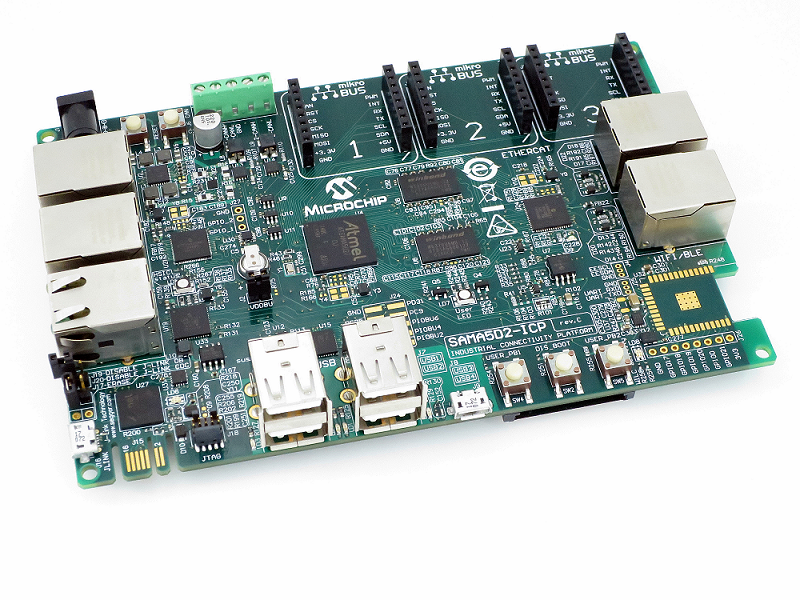
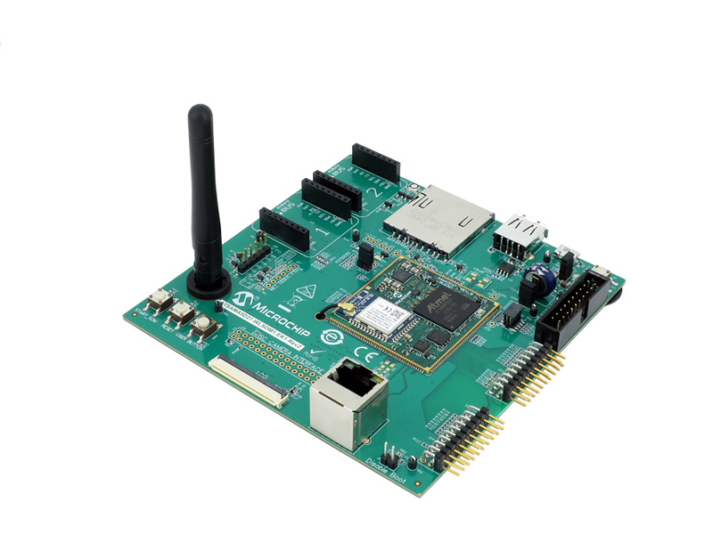
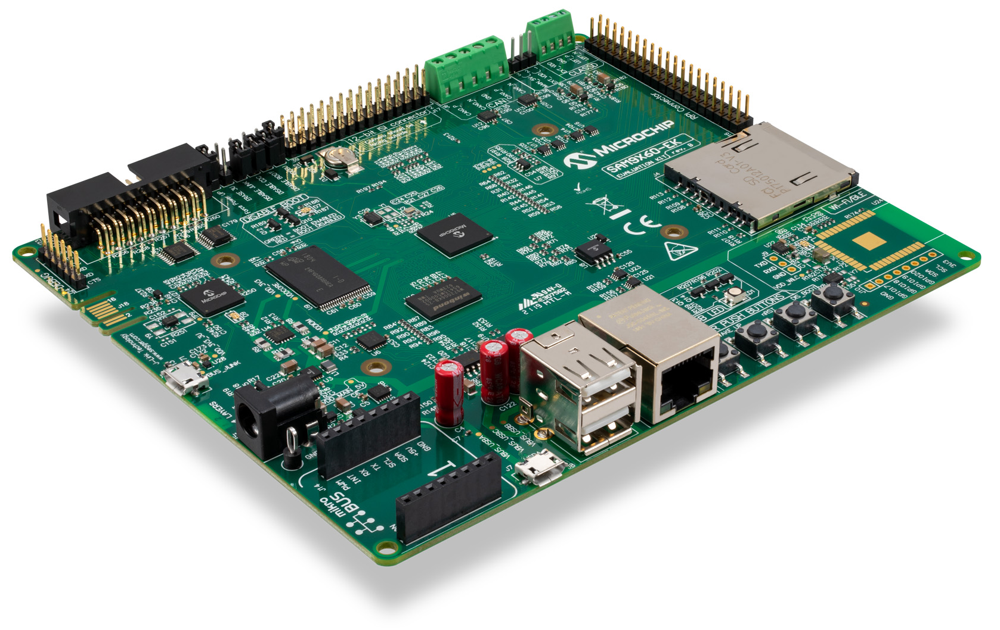
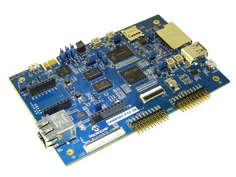
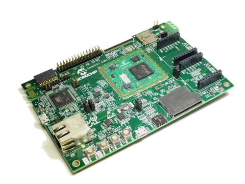
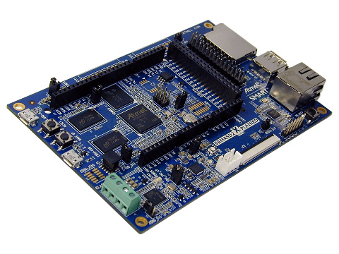

New demo available for SAMA5D2 XPLAINED, SAMA5D27 SOM1 EK, SAMA5D27 WLSOM1 EK, SAMA5D2 ICP and SAM9X60 EK boards. Based on updated components: New demo available for SAMA5D2 XPLAINED, SAMA5D27 SOM1 EK, SAMA5D27 WLSOM1 EK, SAMA5D2 ICP and SAM9X60 EK boards. Based on updated components:
- Linux kernel 5.4.x (+ LTS maintenance updates up to v5.4.81)
- AT91Bootstrap 3.10.2 with support for all SAM9X60-SiP
 variants variants
- U-Boot 2020.01 with PDA screen detection at boot time, FIT image support and overlay support
- New version for Microchip Ensemble Graphics Toolkit (EGT) 1.1 and associated applications
- Better performance due to more accurate damage regions
- Consolidation of sizer layout and rework of the grid layout
- Progress bars, now supports stop / resume
- New version for WILC driver and firmware and jump to version 15.4.1
- Better handling of SPI interface at low speed, better performance in SPI
- Fix suspend / resume function number in SDIO mode
- Better management of power sequence and DT power / reset specification
New kernel features:
- Integration of stable kernel updates up to v5.4.81
- Update WILC driver & firmware to 15.4.1
- QSPI: big performance improvement by using enhanced memory accesses (~ 4 x read speed improvement)
- ISC / Camera sensor: align with Mainline
- KSZ8563: Fix number of ports and convert to phylink
- Sam9x60: support for different System-In-Package (SiP) identifications
- Sam9x60: align clock sub-system with Mainline and add fractional PLL support
- Fix CAN message SRAM configuration
- Sama5d2: Fix securam accesses
New Yocto Project/Buildroot/OpenWrt features:
- Yocto Project: Updated the LTS release to 3.1.4 (Dunfell)
- Buildroot: Updated the LTS release to revision 2020.02.8
- Yocto & Buildroot: Update CryptoAuthLib to 3.2.5
- Yocto & Buildroot: Update Amazon Web Services GreenGrass core (AWS GG) to v1.11.0
- Ready to connect to AWS Cloud for all our sama5d2 based boards!
- Microchip Peripheral I/O Python Package: mpio move to revision 1.3, fully compatible with Python3
- Easier WiFi provisioning with updated Wifi and Bluetooth applications
 : images for following boards are not generated: SAMA5D3 XPLAINED, SAMA5D4 XPLAINED, SAMA5D2 PTC EK : images for following boards are not generated: SAMA5D3 XPLAINED, SAMA5D4 XPLAINED, SAMA5D2 PTC EK
- However, no source code for these boards is removed
Demo Image for all boards. Choose headless (no video) or graphics option, your root filesystem flavor, flash and you're ready to go:
- NAND and SPI + eMMC media types were flashed using SAM-BA 3.3
Yocto Project SDK based on Linux4SAM 2020.10 release (Yocto Project 3.1.4 Dunfell)
And all goodies of previous Linux4SAM revisions!
New naming scheme:
- New naming scheme for Linux4SAM releases. The name will now reflect the year and month of the release, for easy identification of the moment in time of the release.
- This release we present now corresponds to 2020 April release, thus 2020.04.
New demo available for all previous SAMA5 boards and SAM9X60-EK board. Based on updated components:
- Linux kernel 5.4.x (+ LTS maintenance updates up to v5.4.41)
- AT91Bootstrap 3.9.2 with security fixes (Buildroot, OpenWrt); 3.9.3 with additional move to Python3 (Yocto Project only)
- U-Boot 2020.01 with PDA screen detection at boot time, FIT image support and overlay support. Check our FAQ for any questions. Additional support for unlocking and writing SST QSPI flashes in U-boot (saving environment to QSPI flash for example)
- Yocto Project 3.1 (Dunfell). First to benefit from the Long Term Support (LTS) plan.
- Buildroot generated from 2020.02.2 LTS revision using buildroot external
- OpenWrt Linux operating system : 19.07.2 stable branch
- Device tree overlays and FIT Image support
- New full featured graphical demos using the Microchip Ensemble Graphics Toolkit (EGT) 1.0 as a graphic library
- Integrated WILC driver and firmware version 15.4 . For any questions check FAQ and Applications pages
- Amazon Web Services GreenGrass (AWS GG) v1.10.1 is now included and ready to connect to AWS Cloud for all our sama5d2 based boards !
New kernel features:
- Integration of stable kernel updates up to v5.4.41
- Update WILC driver & firmware to 15.4.
- Integration of SAMA5D2-ICP board in the release
- Implement I2C bus recovery mechanism
- Allow using more than 4 GPIOs as CS in atmel-spi driver
- Add support for phylink in MACB driver
- Master clock register offset fixes for SAM9X60 in shutdown, reset controller and PM SoC drivers
- Improve power saving modes by disabling CPU PLL for SAM9X60
- Add SAMA5D2-ADC additional software trigger support (for example, sysfs trigger)
- Add real time timer (RTT) driver for SAM9X60
- Fix fast drop of VDDCORE on shutdown operations for SAM9X60
- Refactor reset controller driver
- Switch the AES and TDES crypto drivers to the skcipher API. Clean the drivers and add various fixes.
- Mainline SAM9x60 HWRNG support
- Add support for SHA204A (I2C) random number generator
- DMA drivers locking improvement and deadlock fixes
- Fix possible MMIO window size overrun in QSPI driver
- USB device controller (gadget) driver cleanup & fix for Vbus disconnect DMA issue.
- Add support for Micron/Aptina MT9V022 monochrome camera sensor for both ISC-based MPUs and ISI-based MPUs.
New Yocto Project/Buildroot/OpenWrt features:
- Full support for EGT (version 1.0 included)
- Moved to the new Yocto branch, Dunfell (3.1) LTS release
- Moved to new Buildroot release, 2020.02 LTS revision 2020.02.2
- Moved to new OpenWrt release, 19.07.2
- Firmware version 15.4 for WILC3000 and WILC1000 Wi-Fi and Bluetooth together with all the required software components (wpa-supplicant, hostapd and more). For any questions check FAQ and Applications pages.
- WILC demo apps are now available : Wilcbtapps and Websocket for the SAMA5D27 WLSOM1 EK board. Also included WiFi provisioning webpage.
- Yocto Project has deprecated Python2. We made a special version of AT91Bootstrap (v3.9.3) that uses Python3 instead of Python. There are no other differences between v3.9.2 and v3.9.3. Python is used by AT91Bootstrap only as a build dependency.
- Amazon Web Services GreenGrass (AWS GG) v1.10.1 is now included and ready to connect to AWS Cloud for all our sama5d2 based boards , on both Buildroot and Yocto Project distributions. The availability of ECC608 either as soldered on-board or as an addition through an expansion connector makes the solution secure, easy to use and seamless.
Demo Image for all boards. Choose headless (no video) or graphics option, your root filesystem flavor, flash and you're ready to go:
- NAND and SPI + eMMC media types were flashed using SAM-BA 3.3
Yocto Project SDK based on Linux4SAM 2020.04 release (Yocto Project 3.1 Dunfell)
And all goodies of previous Linux4SAM revisions!
New demo available for the new SAMA5D2-ICP (Now available !). Based on the following components:
New kernel features:
- Integration of stable kernel updates up to v4.19.78
- Added support for SAMA5D2-ICP board
- SAMA5D2-ICP drivers:
- MCP16502 PMIC driver
- KSZ 8563 ethernet switch driver
- USB 2534 hub generic driver
- LAN7850 driver with suspend / resume fix
- Driver for the WILC3000 and WILC1000 release 15.2 in place in the Linux4SAM kernel and ready to use
Yocto Project/Buildroot features:
- Support for new board: SAMA5D2-ICP
- Yocto branch, Warrior (2.7.1)
Demo Image for the new SAMA5D2-ICP board. Choose headless (no video) option, your root filesystem flavor, flash and you're ready to go: Demo Archive 6.2-icp page
And all goodies of previous Linux4SAM revisions!
New demo available for all previous SAMA5 boards and new SAM9X60-EK board and SAMA5D2 WLSOM1 EK. Based on updated components:
New kernel features:
- SAM9X60 SoC drivers:
- PLL Fractional support, PIT64 driver used for clock event, PIO drive strength and slew rate support
- PWM support, QSPI controller support, NAND controller support, ISI support, ADC support
- Reworked USB gadget driver. Updated endpoint allocation scheme. Fixed driver when working in FIFO mode only
- I2S Multi Channel driver with support of up to 8 channels in TDM mode
- Power management: ULP0 PM and Idle
- Watchdog support, TRNG support, RTC support
- SAMA5D27 WLSOM1 drivers:
- Backup and self-refresh support for LPDDR2
- PTC support for QT1 Mutual/Self Capacitance and Q2 wings
- Driver for the WILC3000 and WILC1000 release 15.2 in place in the Linux4SAM kernel and ready to use
New Yocto Project/Buildroot features:
- Full support for EGT (version 0.8.2 included)
- Support for two new boards: SAM9X60 Evaluation Kit and SAMA5D2 WLSOM1 EK
- Moved to the new Yocto branch, Warrior (2.7.1)
- Support for QT framework version 5.12.x is still included in the features
Demo Image for all boards. Choose headless (no video) or graphics option, your root filesystem flavor, flash and you're ready to go: Demo Archive 6.2 page
- NAND and SPI + eMMC media types were flashed using SAM-BA 3.3
Yocto Project SDK based on Linux4SAM 6.2 release (Yocto Project 2.7.1 Warrior)
And all goodies of previous Linux4SAM revisions!
New demo available for all SAMA5 boards and AT91SAM9x5-EK board. Based on updated components:
New kernel features:
- Redesign of the Image Sensor Controller (ISC) driver with new White balance enhanced features.
- Driver for the WILC3000 and WILC1000 release 15.2 in place in the Linux4SAM kernel and ready to use
- TWI hardware filters support that filter out possible glitches on the TWI wires for both SAMA5D4 Xplained and SAMA5D2 Xplained
- Add 9bit/Multidrop support in USART driver
- PIOBU pin controller driver
- MCP16502 PMIC driver
- ACT8945A: PM support (integrated in mainline)
- Ethernet: add runtime PM support (integrated in mainline)
- Ethernet: add backup and self-refresh support (integrated in mainline)
- Ethernet: use of NAPI GRO helpers to improve RX performance
- QSPI: move driver under the SPI-MEM interface. The controller can be used with NAND or NOR flashes.
New Yocto Project/Buildroot features:
- Update of QT framework to 5.12.x (latest LTS for QT5)
- Firmware version 15.2 for WILC3000 and WILC1000 Wi-Fi and Bluetooth together with all the required software components (wpa-supplicant, hostapd and more)
- Add 9bit serial demo applications for 9bit protocol demo
Demo Image for all boards. Choose with or without screen option, your root filesystem flavor, flash and you're ready to go: Demo Archive 6.1 page
- NAND and SPI + eMMC media types were flashed using SAM-BA 3.2.3
Yocto Project SDK based on Linux4SAM 6.1 release (Yocto Project 2.6.2 Thud)
And all goodies of previous Linux4SAM revisions!
New demo available for all SAMA5 boards and AT91SAM9x5-EK board. Based on updated components:
- Linux kernel 4.14.x (+ LTS maintenance updates up to v4.14.73)
- AT91Bootstrap 3.8.11 with new support for DMA load from SD-Card/eMMC and 8-bit bus eMMC detect & support
- U-Boot 2018.07 with PDA screen detection at boot time, FIT image support and overlay support. Check our FAQ for any questions
- Yocto Project 2.5.1 (Sumo)
- Buildroot generated from 2018.02 revision using buildroot external
- OpenWrt Linux operating system based on master branch of the reunified LEDE / OpenWrt project: 18.06
- Device tree overlays and FIT Image support
New kernel features:
- use of Device Tree overlays for board variants and auto-identification of PDA screens when hardware permits
- handling for all low power modes ULP0/ULP1/Backup Self Refresh on SoC that support them
- add support for PDA 5" screen TM5000/AC320005-5
- add driver for the new Atmel I2S controller
- ADC: add resistive touchscreen support to SAMA5D2
- QSPI: add Global Block Unlock support and SFDP tables to support SST26 QSPI flash memories
- USB host: add the HSIC port support
- USART: add ISO7816 support to serial driver
- USART: add support for SPI mode in USART driver: spi-at91-usart
- fix to sama5d2 shutdown controller
- fix drive strength for NAND data pins on SAMA5D2-PTC-EK
- fix Ethernet macb TX stuck under certain conditions (net: macb: restart tx after tx used bit read)
- fix cts(cbc(aes)) and rfc4543(gcm(aes))) crypto modes
New Yocto Project/Buildroot features:
- new whiteboard Qt application with improved performance
- new wildwest Qt demo showing parallax effects with libplanes
- new Qt application interactively demonstrating software vs hardware scene objects
- new spacetouch application showing using all planes with a parallax effect
- new defconfigs for node-red out-of-the-box working setup (only on buildroot)
- new vision demo demonstrating machine vision with OpenCV (only on buildroot)
- Qt Creator support
Libplanes with support for YUV plane formats (support video formats)
MPIO additions:
- Add support for at91sam9x5
- Add support to change board/cpu through environment variables
- Add loopback test for SPI
iocontrol - add splash screen and startup time optimizations.
Demo Image for all boards. Choose with or without screen option, your root filesystem flavor, flash and you're ready to go: Demo Archive 6.0 page
NAND and SPI + eMMC media types were flashed using SAM-BA 3.2.3
Yocto Project SDK based on Linux4SAM 6.0 release (Yocto Project 2.5.1 "Sumo")
And all goodies of previous Linux4SAM revisions!
New demo available for all SAMA5 boards and AT91SAM9x5-EK board. Based on updated components:
- Linux kernel 4.9.x (+ LTS maintenance updates up to v4.9.87)
- AT91Bootstrap 3.8.10
- U-Boot 2017.03 with Device Model / Device Tree support
- Yocto Project 2.4.2 (Rocko)
- Buildroot generated from latest 2018.02 revision with the new buildroot external
- OpenWrt filesystem solution based on master branch of the reunified LEDE / OpenWrt project
- Support for new SAMA5D2 PTC EK and dedicated page: Sama5d2PtcEKMainPage
- Support for the Peripheral Touch Controller (PTC), able to provide a Capacitive Touch interface. Linux driver uses it as an input device
- Use of QT LinuxFB with DRM/KMS backend without the need of wayland/weston nor OpenGLES (Mesa 3D)
- Libplanes graphical library for taking advantage of the LCD hardware overlays (2D Hardware operations)
- Availability of the new Microchip Peripheral I/O Python Package: mpio
- And all the goodies of previous Linux4SAM revisions!
Demo Image for all boards. Choose your screen option, your root filesystem flavor, flash and you're ready to go: Demo Archive 5.8 page
Yocto Project SDK based on Linux4SAM 5.8 release (Yocto Project 2.4.2 "Rocko")
Using the Image Sensor Controller (ISC) describes how the Image Sensor interface could be configured, and used to take pictures or videos with a simple camera sensor.
Pulse Width Modulation driver (PWM) FAQ describes how this interface could be configured, debugged and used.
FAQ page about how to connect a PDA Inc. LCD screens to the various SAMA5D2, SAMA5D3 and SAMA5D4 Xplained boards.
Learn the intrinsics of the recent move to Driver Model and Decive Tree in U-boot with the FAQ entry for SAMA5 SoC and boards.
|







|


 SAMA5D2-ICP
SAMA5D2-ICP {kind=link}
{kind=link}
{kind=link}
{kind=link}
{kind=link}
{kind=link}
{kind=link}
{kind=link}
{kind=link}
{kind=link}
{kind=link}
{kind=link}
{kind=link}
{kind=link}
{kind=link}
{kind=link}
{kind=link}
{kind=link}
{kind=link}
{kind=link}
{kind=link}
{kind=link}
{kind=link}
{kind=link}